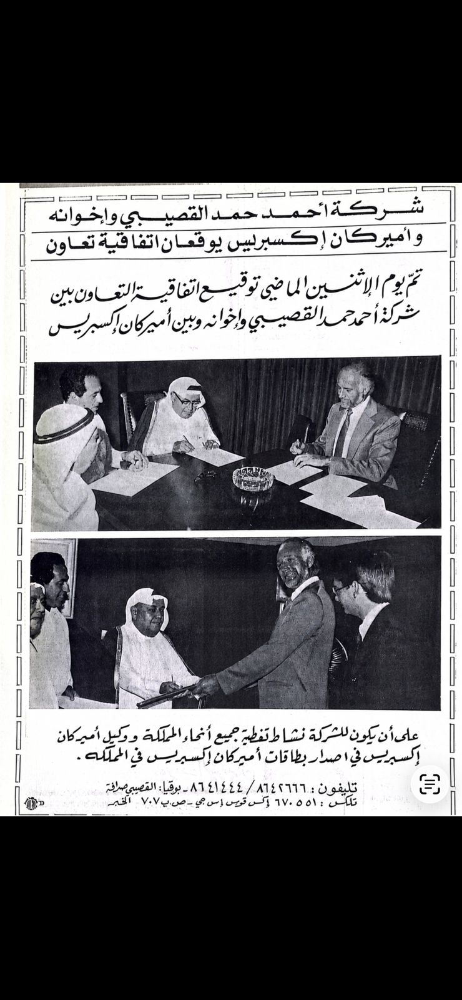
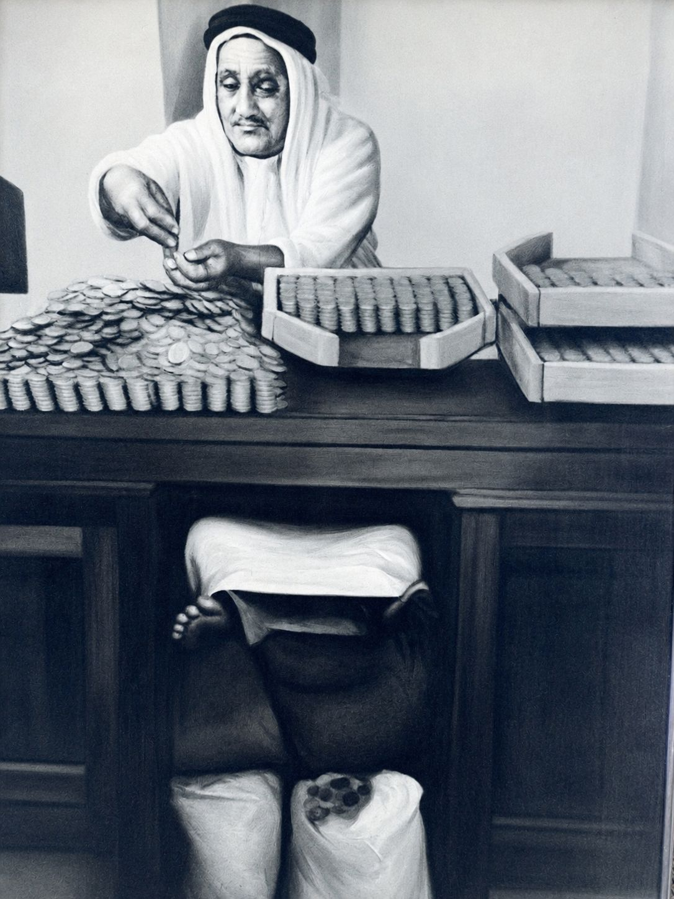
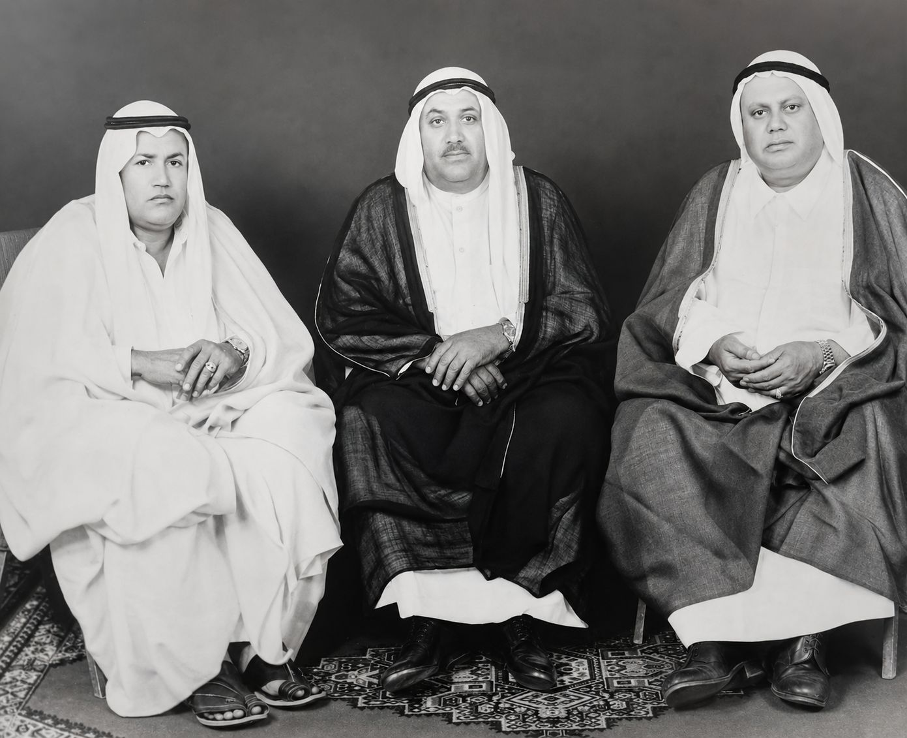

الأسس التجارية
عُرفت الشركة بتأسيس أول مستودع مخصص لأرامكو السعودية وتوريد أول طلب محلي لأرامكو من الأنابيب الفولاذية والقاطرات والإطارات.

منذ 1940
من تأسيس الأعمال في المنطقة الشرقية إلى محفظة حالية من الشركات والاستثمارات عبر ستة قطاعات.



البدايات
تبدأ قصة أحمد حمد القصيبي وإخوانه بالشيخ حمد بن أحمد القصيبي، الذي مهّدت خبرته العملية والتجارية لقيام الأعمال العائلية في المنطقة الشرقية.
ومن تلك البدايات تطورت الشركة لتصبح حضوراً سعودياً ممتداً ارتبط بالنمو التجاري والصناعي للمنطقة الشرقية — من أدوار التخزين والتوريد المبكرة إلى شركات تشغيلية واستثمارات في أنحاء المملكة اليوم.
الإرث
ثلاثة محاور تسير في قصة المجموعة: الأسس التجارية في المنطقة الشرقية، والمشاركة الصناعية المبكرة، والمحفظة المتنوعة التي تمثل الأعمال اليوم.
عُرفت الشركة بتأسيس أول مستودع مخصص لأرامكو السعودية وتوريد أول طلب محلي لأرامكو من الأنابيب الفولاذية والقاطرات والإطارات.
يشمل الملف التاريخي للمجموعة البدايات الصناعية في المنطقة الشرقية، بما في ذلك المشاركة في أول محطة كهربائية ومصنع الإسمنت السعودي.
تعرض محفظة الموقع الحالية 19 شركة عبر الضيافة والأغذية والصناعة والطاقة والنقل والإعلام والسفر.
المحطات الكبرى
لمحة موجزة عن مسيرة الأعمال من تأسيسها عام 1940 إلى المجموعة المتنوعة المعروضة في هذا الموقع.
التأسيس
تأسست الأعمال عام 1940 في المنطقة الشرقية. وفي تاريخها التجاري المبكر، عُرفت الشركة بتأسيس أول مستودع مخصص لأرامكو السعودية وتوريد أول طلب محلي لأرامكو من الأنابيب الفولاذية والقاطرات والإطارات.
منتصف القرن العشرين
كما يشير الملف التاريخي للمجموعة إلى مساهمتها في البدايات الصناعية للمنطقة الشرقية، بما في ذلك أول محطة كهربائية ومصنع الإسمنت السعودي في المنطقة.
العقود التالية
توسعت الأعمال على مدى السنوات من خلال شركات تشغيلية وشراكات واستثمارات في قطاعات متعددة من الاقتصاد السعودي.
اليوم
تعرض محفظة الموقع الحالية 19 شركة عبر الضيافة والترفيه، والأغذية والتموين، والصناعة والتصنيع، والطاقة والكهرباء، والنقل والخدمات اللوجستية، والإعلام والسفر.